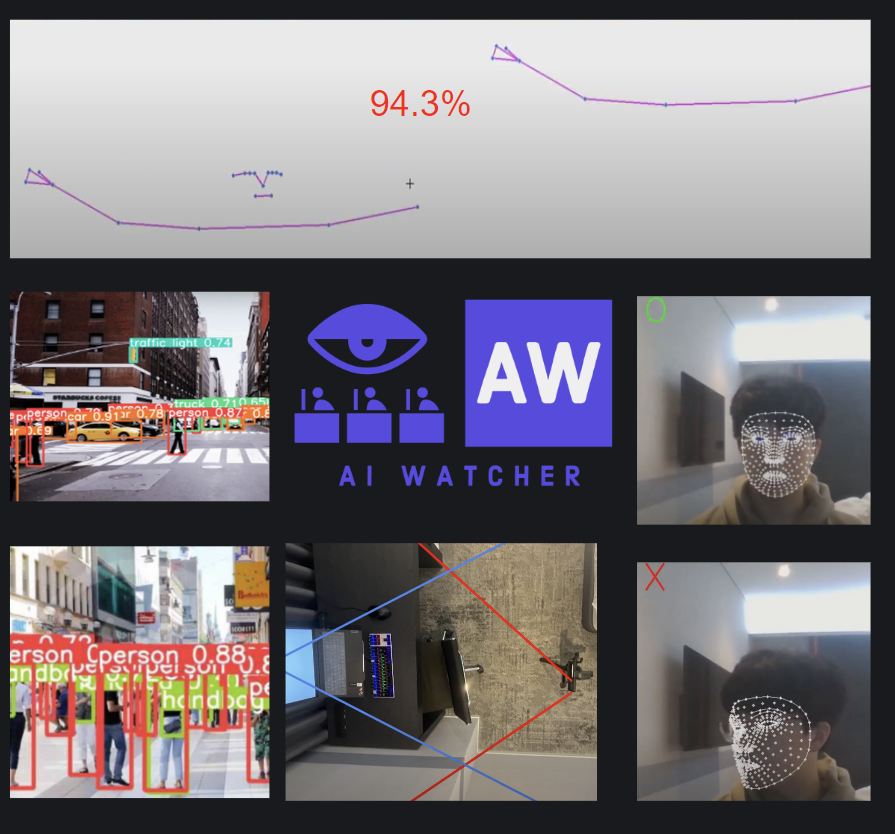

<div id="de_modal-content" class="container">
    <div class="row g-5">
        <div class="col-lg-8">
            
            
        </div>
        <div class="col-lg-4 de_project-info">
            <h3>AI Watcher </h3>
            <p>AI watcher is an exam-proctoring software programmed for the prevention of cheating during online exams as its case spiked during covid-19. Watcher leverages new and improved algorithms that minimize the blind spot.
                First, a webcam and phone camera are placed facing opposite directions around a student. Then, 2d pose estimation in webcam and phone camera compares and contrasts with each other so that they are looking at the same person. AI watcher also detects whether another person is engaged in the testing through the mic and human detection. During the exam, face mesh was utilized to make sure that participants were looking in the right direction.
                


            </p>
           
            <div class="de_project-details">
                <div class="d-field">
                    <i class="fa fa-file-text-o"></i>Type: <span>AI & Algorithm</span>
                </div>
                <div class="d-field">
                    <i class="fa fa-calendar-o"></i>Year: <span>2022</span>
                </div>
            </div>
            <div class="spacer-30"></div>
            <blockquote>
                <b>Functions:</b></br>
                
            </blockquote>
            <span style="font-size:16px"> <b>
                - Minimization of Blind Area</br>
                - Additional Human & Microphone Detection </br>
                - Gaze Detection</br>
                - 2D Pose Estimation</br>
            </span>
        </div>
    </div>
</div>